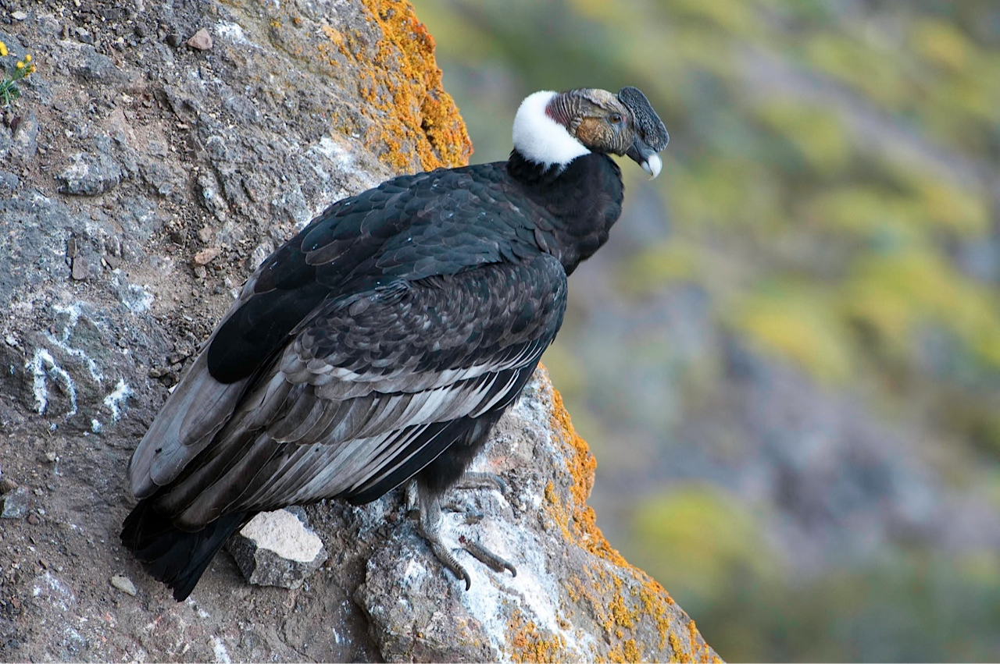
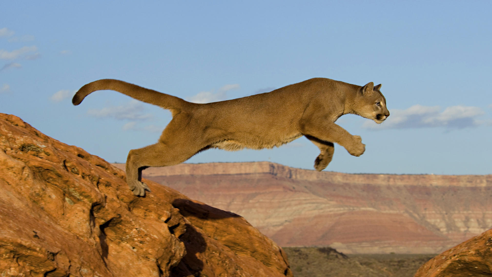

Habita el sudeste de Bolivia, el oeste del Paraguay, y el norte y centro de la Argentina hasta el norte de la Patagonia. Primero fue introducida en el oeste del Uruguay, donde nunca habitó naturalmente, pues las poblaciones de Entre Ríos eran detenidas por el infranqueable río Uruguay. La especie pronto logró expandirse en el nuevo, pero una rápida reacción logró eliminarla por completo, siendo este un caso testigo a nivel mundial en la lucha contra las especies introducidas.
Es de pelo abundante, cabeza grande, hocico abultado y chato por delante, bigotes largos y sedosos y orejas pequeñas. Generalmente, de pelaje gris en el lomo y blanco en el vientre. Dos franjas negras le atraviesan la cara. Sus patas son cortas, con dedos y uñas fuertes que le sirven para cavar la madriguera. La cola se desprende con facilidad, y esto la salva muchas veces de ser capturada. El peso y su dimensión corporal varía con edad, sexo, bondad climática, y zona. En promedio la cría nace con 180 g de peso. Un macho adulto pesa entre 4,5-7,5 kg; la hembra adulta entre 2,5-4,2 kg.
Los paisanos las combatían llenando de humo sus túneles. Actualmente, se utilizan gases tóxicos. Fue declarada por el Ministerio de Agricultura de Argentina plaga de la agricultura en 1907, y por ley nacional su control es obligatorio. Este combate, además del avance de la frontera agropecuaria, la llevó a sufrir una regresión poblacional en gran parte de su geonemia en la Argentina, amén de sufrir frecuentes extinciones locales de manera natural, incluso en parques nacionales (por ejemplo en el Parque Nacional El Palmar, o en el Parque Nacional Lihué Calel).
|  |
|  |